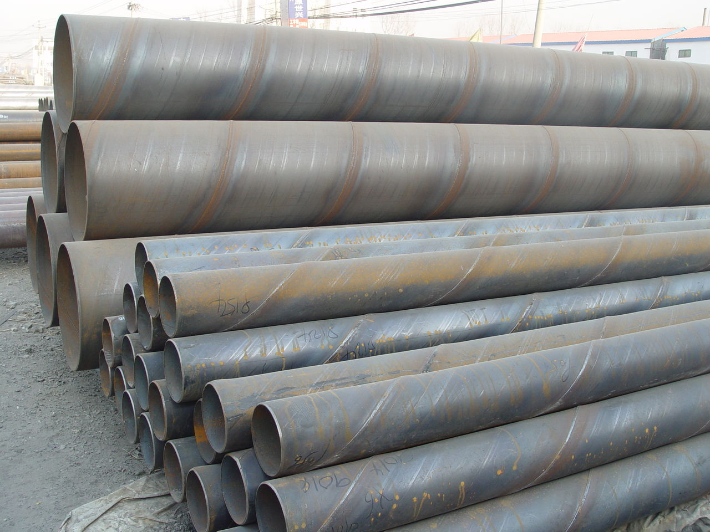

螺旋管厂家产厂家需求面难有明显好转
文章出处：admin 人气：发表时间：2017-09-12 22:30

以后市场需求根本面并没有由于进入金九淡季而呈现分明恶化，且依旧面临较大的供给压力，因而，钢价下跌继续动力缺乏，更多剖析师指出价钱呈现下跌，次要是由于钢价曾经处于历史位置，厂商均憋足了一口吻，一遇到拉涨时机，便呈现报复性式的上调。
据中钢协最新数据，2014年9月上旬全国大邱庄矩管消费厂家粗钢日均产量179.54万吨，较上一旬增长7.1%。数据同时显示，9月上旬末，重点钢企钢材库存量1513.6万吨，较上一旬末增长6.3%，较上月同期增长3.9%。粗钢日产量与库存双双上升，这意味着钢材市场供应压力再次加大，下游需求仍不悲观，行业照旧面临较大的去库存压力。
继8月份粗钢产量两旬呈现下降之后，9月上旬粗钢产量再度上升螺旋管厂家，厂内库存量也环比下跌，次要还是钢厂增产并不分明。目前由于原料价钱连连下行，消费企业仍存盈利空间;加上大局部钢厂受资金压力，需求维持开工来继续取得存款;因而，钢厂仍坚持较高程度的开工率;以唐山地域为例，截至9月11日，唐山高炉开工率约94.8%，产能应用率高达96.7%;如此高的开工率，那产量呈现上升也是正常的了。
另外，在需求方面，近日统计局发布的8月份微观经济数据则足够打击市场了，工业添加值同比增速大幅回落、螺旋管厂家。固定资产投资增速呈现十余年新低、消费增速连月下滑、用电量年内初次负增长……数据根本片面走弱，进一步验证了国际经济下行压力仍存，需求增速持续放缓。目前大邱庄矩管消费厂家需求面难有分明恶化，反而供应又在给力， 市场供大于求的场面难有改观。
下一篇：螺旋管生产厂家场交易活跃销量不断增加 上一篇：螺旋管信息保持较乐观预期
此文关键字：螺旋管厂家产厂家需求面
推荐产品


相关产品
相关推荐
随机推荐
- 10月24日壁厚40的Q345地质钻探螺旋钢管制造工艺
- 拉萨Q345b螺旋管 拉萨螺旋钢管技术 拉萨16锰螺旋
- 螺旋管厂螺旋钢管价格|表面处理方法
- 4月份螺旋钢管厂利润将维持震荡
- 出口螺旋钢管的产品严格要求是什么
- 宁波3月24日船舶用406*20的GB/T12771-1991气体输送螺旋
- 天津市万盛华业钢铁制造有限公司库存量一直在
- 海口螺旋钢管比重 海口Q235A螺旋管 海口螺旋钢管
- 十月螺旋钢管价格走势预警:供强需弱 震荡走
- 螺旋管材质-天津万盛为您提供
- 庆阳优质螺旋钢管 庆阳螺旋管用途 庆阳内防腐螺
- 宝钢国标螺旋钢管价格今天钢管现货市场报价
- 9月6日大邱庄市场螺旋管价格行情
- 六盘水可来料加工121*6的X46饮用水防腐螺旋钢管市
- 延安缝钢管 延安焊接钢管价格 延安好钢
- 天津市万盛华业钢铁制造有限公司成功实践热风
- 兰州螺旋钢管供销 兰州螺旋钢管知识 兰州防腐螺
- 大同改拔560*14的X80直埋钢套钢保温螺旋钢管周长
- 粗钢产量回升一定程度上限制螺旋钢管价格上行
- 螺旋钢管生产质量注意事项螺旋钢管价格
- 天津螺旋钢管市场价格小幅下降20元
- 湘西机械加工外径508的1Cr18Ni9蒸汽螺旋钢管欢迎新
- 苗栗縣本公司对外定做377*14的Q235C污水处理螺旋钢
- 台北螺旋钢管市场 台北SY/T5037螺旋管 台北螺旋钢
- 螺旋钢管行业月报:螺旋钢管价格矿价随时可能结
- 国内市场天津螺旋管厂供需关系有望得到阶段性
- 天津螺旋钢管厂螺旋钢管焊接区的常见缺陷
- 螺旋管厂“巨肥症”能否治愈不得而知
- 短期內大量出口降低了海內的螺旋钢管价格
- 螺旋管厂变形的螺旋钢管改如何做矫直？
重点推荐
- 螺旋管厂在制作螺旋焊管过程中,需要主意的问题
- 波段和趋势共振对螺旋钢管价格有不可预计的推
- 广东Q345b螺旋管 广东X42螺旋管 广东16锰螺旋钢管
- 天津螺旋钢管市场价格小幅下降20元
- 不同板厚及不同环境温度下16Mn钢的预热温度
- 螺旋管厂、螺旋钢管价格交货技术条件
- 沈阳购买螺旋钢管 沈阳螺旋钢管生产工艺 沈阳螺
- 云南螺旋钢管图片 云南排水用螺旋钢管 云南螺旋
- 安庆购买螺旋钢管 安庆螺旋钢管生产工艺 安庆螺
- 天津螺旋管厂-节能减排效力显现
- 南昌生产钢管 南昌钢管壁厚标准 南昌钢
- 外贸16锰钢管 外贸Q235A螺 外贸L245钢管
- 大庆Q235A螺旋管 大庆q345c螺旋钢管 大庆Q345b螺旋管
- Q235B螺旋管生产工艺Q235B螺旋管的特点
- 螺旋钢管按用途分为
- 成都保温螺旋钢管 成都16锰螺旋钢管 成都
- 螺旋管的外径,内径,相邻螺旋间距约为多少算标准
- 黄冈GB/T9711螺旋管 黄冈螺旋钢管市场 黄冈l360螺旋
- 什么是螺旋缝钢管|Q235螺旋钢管工艺流程
- “2012世界末日”之后能否也让螺旋钢管劫难重生